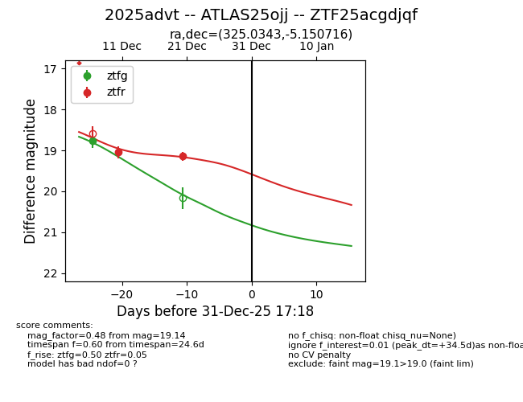
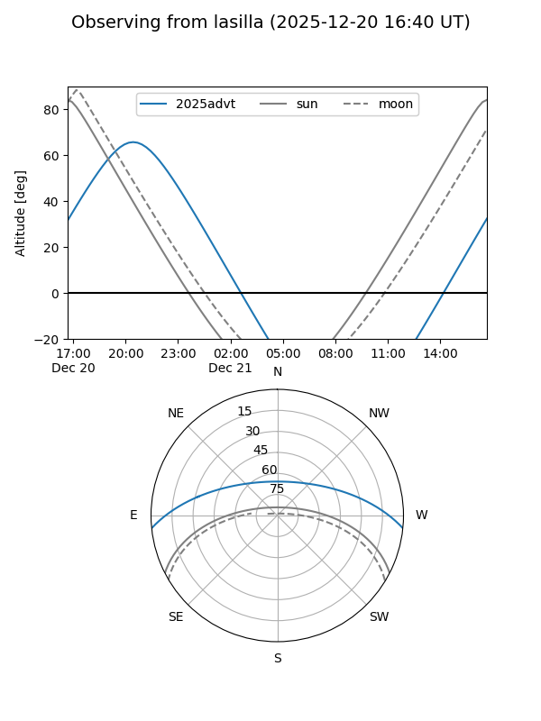
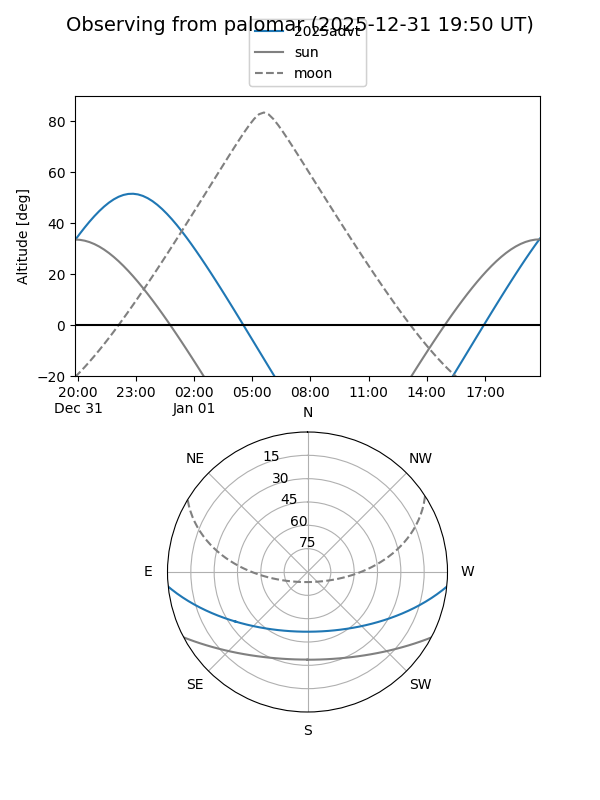

2025advt
Target 2025advt at 2025-12-21 03:48
Aliases and brokers:
FINK: fink-portal.org/ZTF25acgdjqf
Lasair: lasair-ztf.lsst.ac.uk/objects/ZTF25acgdjqf
ALeRCE: alerce.online/object/ZTF25acgdjqf
TNS: wis-tns.org/object/2025advt
YSE: ziggy.ucolick.org/yse/transient_detail/2025advt
alt names
ZTF25acgdjqf (ztf,fink_ztf)
2025advt (tns,yse)
ATLAS25ojj (atlas)
Coordinates:
equatorial (ra, dec) = 325.0343,-5.15072
equatorial (HMS+DMS) = 21:40:08.23,-05:09:02.58
galactic (l, b) = (49.8856,-39.49843)
Flags:
Photometry:
last ztfg=18.77, ztfr=19.14
1 ztfg, 2 ztfr detections
Lightcurve

Visibility


Additional plots